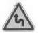
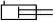
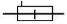
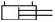
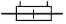
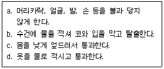
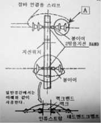

지게차운전기능사 (2008-10-05 기출문제)
1. 디젤엔진에서 연료를 고압으로 연소실에 분사하는 것은?
- 프라이밍 펌프
- 인젝션 펌프
- 분사노즐(인젝터)
- 조속기
(정답률: 73%)

2. 실린더에 마모가 생겼을 때 나타나는 현상이 아닌 것은?
- 압축효율 저하
- 크랭크실 내의 윤활유 오염 및 소모
- 출력 저하
- 조속기의 작동 불량
(정답률: 74%)
3. 디젤기관에서 에어클리너가 막히면 어떤 현상이 일어나는가?
- 배기색은 희고, 출력은 정상이다.
- 배기색은 희고, 출력은 증가한다.
- 배기색은 검고, 출력은 저하된다.
- 배기색은 검고, 출력은 증가한다.
(정답률: 94%)
4. 밸브스템엔드와 로커암(태핏) 사이의 간극은?
- 스템 간극
- 로커암 간극
- 캠 간극
- 밸브 간극
(정답률: 47%)
5. 기관에 사용되는 윤활유의 성질 중 가장 중요한 것은?
- 온도
- 점도
- 습도
- 건도
(정답률: 88%)
6. 디젤기관을 시동시킨 후 충분한 시간이 지났는데도 냉각수 온도가 정상적으로 상승하지 않을 경우 그 고장의 원인이 될 수 있는 것은?
- 냉각팬 벨트의 헐거움
- 수온조절기가 열린 채 고장
- 물 펌프의 고장
- 라디에이터코어 막힘
(정답률: 64%)
7. 윤활장치에서 오일여과기의 역할은?
- 오일의 역순환 방지 작용
- 오일에 필요한 방청 작용
- 오일에 포함된 불순물 제거 작용
- 오일 계통에 압송 작용
(정답률: 82%)
8. 4행정 사이클 기관의 행정 순서로 맞는 것은?
- 압축→동력→흡입→배기
- 흡입→동력→압축→배기
- 압축→흡입→동력→배기
- 흡입→압축→동력→배기
(정답률: 82%)
9. 냉각팬의 벨트 유격이 너무 클 때 일어나는 현상으로 옳은 것은?
- 베어링의 마모가 심하다.
- 강한 텐션으로 벨트가 절단된다.
- 기관 과열의 원인이 된다.
- 점화시기가 빨라진다.
(정답률: 60%)
10. 디젤기관에서 조속기가 하는 역할은?
- 분사시기 조정
- 분사량 조정
- 분사압력 조정
- 착화성 조정
(정답률: 63%)
11. 디젤기관에서 주행 중 시동이 꺼지는 현상과 가장 거리가 먼 것은?
- 연료필터가 막혔을 때
- 연료탱크 내에 물이 들어 있을 때
- 연료연결 파이프에 누설이 있을 때
- 프라이밍 펌프가 불량할 때
(정답률: 63%)
12. 일상 점검정비 작업 내용에 속하지 않는 것은?
- 엔진 오일량
- 브레이크액 수준 점검
- 라디에이터 냉각수량
- 연료 분사노즐 압력
(정답률: 75%)
13. 엔진이 기동 되었는데도 시동스위치를 계속 ON 위치로 할 때 미치는 영향으로 맞는 것은?
- 시동전동기의 수명이 단축된다.
- 클러치 디스크가 마멸된다.
- 크랭크축 저널이 마멸된다.
- 엔진의 수명이 단축된다.
(정답률: 73%)
14. 퓨즈의 용량 표기가 맞는 것은?
- M
- A
- E
- V
(정답률: 69%)
15. 겨울철에 디젤기관 시동이 잘 안 되는 원인에 해당되는 것은?
- 엔진오일의 점도가 낮은 것을 사용
- 4계절용 부동액을 사용
- 예열장치 고장
- 점화코일 고장
(정답률: 62%)
16. 축전지 터미널에 부식이 발생하였을 때 나타나는 현상과 가장 거리가 먼 것은?
- 기동 전동기의 회전력이 작아진다.
- 엔진 크랭킹이 잘 되지 않는다.
- 전압강하가 발생 된다.
- 시동 스위치가 손상된다.
(정답률: 63%)
17. 납산축전지를 충전할 때 화기를 가까이 하면 위험한 이유로 옳은 것은?
- 수소가스가 폭발성 가스이기 때문에
- 산소가스가 폭발성 가스이기 때문에
- 수소가스가 조연성 가스이기 때문에
- 산소가스가 인화성 가스이기 때문에
(정답률: 75%)
18. AC 발전기에서 작동시 전자석이 되는 것은?
- 발전기 팬
- 스테이터
- 계자
- 로터
(정답률: 41%)
19. 운전 중 클러치가 미끄러질 때의 영향이 아닌 것은?
- 속도 감소
- 견인력 감소
- 연료소비량 증가
- 엔진의 과냉
(정답률: 67%)
20. 다음 중 굴삭기의 작업 장치에 해당되지 않는 것은?
- 브레이커
- 파일드라이브
- 힌지 버킷
- 크러셔
(정답률: 48%)
21. 기중기 붐에 설치하여 작업할 수 있는 장치로 틀린 것은?
- 파일드라이버
- 백호
- 크램셀
- 스케리파이어
(정답률: 35%)
22. 공기 브레이크에서 브레이크슈를 직접 작동시키는 것은?
- 릴레이 밸브
- 브레이크 페달
- 캠
- 유압
(정답률: 50%)
23. 자동변속기의 메인압력이 떨어지는 이유가 아닌 것은?
- 클러치판 마모
- 오일 부족
- 오일필터 막힘
- 오일펌프 내 공기 생성
(정답률: 57%)
24. 지게차에서 리프트 실린더의 주된 역할은?
- 마스터를 틸트시킨다.
- 마스터를 이동시킨다.
- 포크를 상승, 하강시킨다.
- 포크를 앞뒤로 기울게 한다.
(정답률: 84%)
25. 트랙장치의 트랙유격이 너무 커 느슨해 졌을 때 발생하는 현상으로 가장 적합한 것은?
- 주행속도가 빨라진다.
- 슈판 마모가 급격해진다.
- 주행속도가 아주 느려진다.
- 트랙이 벗겨지기 쉽다.
(정답률: 73%)
26. 로더장비로 작업할 수 있는 가장 적합한 것은?
- 백호 작업
- 스노 플로우작업
- 훅 작업
- 트럭과 호퍼에 토사 적재 작업
(정답률: 57%)
27. 출발지 관할 경찰서장이 안전기준을 초과하여 운행할 수 있도록 허가하는 사항에 해당되지 않는 것은?
- 적재중량
- 운행속도
- 승차인원
- 적재용량
(정답률: 50%)
28. 건설기계관련법상 건설기계는 특수건설기계를 포함하여 몇 기종으로 분류되어 있는가?
- 20기종
- 23기종
- 27기종
- 30기종
(정답률: 71%)
29. 도로교통법상 모든 차의 운전자는 같은 방향으로 가고 있는 앞차의 뒤를 따를 때에는 앞차가 갑자기 정지하게 되는 경우에 그 앞차와의 충돌을 피할 수 있는 필요한 거리를 확보하도록 되어 있는 거리는?
- 급제동 금지거리
- 안전거리
- 제동거리
- 진로양보 거리
(정답률: 84%)
30. 반드시 건설기계정비업체에서 정비하여야 하는 것은?
- 오일의 보충
- 배터리의 교환
- 창유리의 교환
- 엔진 탈ㆍ부착 및 정비
(정답률: 80%)
31. 자동차의 철길 건널목 통과 방법에 대한 설명으로 틀린 것은?
- 철길 건널목에서는 앞지르기를 하여서는 안 된다.
- 철길 건널목 부근에서는 주ㆍ정차를 하여서는 안 된다.
- 철길 건널목에 일시 정지표지가 없을 때에는 서행하면서 통과한다.
- 철길 건널목에서는 반드시 일시 정지 후 안전함을 확인한 후에 통과한다.
(정답률: 79%)
32. 술에 만취한 상태에서 건설기계를 조종한 자에 대한 면허의 취소ㆍ정지처분 내용은?
- 면허 취소
- 면허효력 정지 60일
- 면허효력 정지 50일
- 면허효력 정지 70일
(정답률: 84%)
33. 1톤 지게차의 정기검사 유효기간은?
- 6개월
- 2년
- 1년
- 3년
(정답률: 55%)
34. 편도 4차로의 경우 교차로 30미터 전방에서 우회전을 하려면 몇 차로로 진입통행 해야 하는가?
- 2차로와 3차로 통행한다.
- 1차로와 2차로로 통행한다.
- 1차로로 통행한다.
- 4차로로 통행한다.
(정답률: 85%)
35. 그림의 교통안전표지로 맞는 것은?

- 우로 이중 굽은 도로
- 좌우로 이중 굽은 도로
- 좌로 굽은 도로
- 회전형 교차로
(정답률: 72%)
36. 건설기계소유자가 관련법에 의하여 등록 번호표를 반납하고자 하는 때에는 누구에게 하여야 하는가?
- 국토해양부장관
- 구청장
- 시?도지사
- 동장
(정답률: 81%)
37. 유압기기의 과부하 방지를 위한 밸브로 맞는 것은?
- 분류밸브
- 방향제어 밸브
- 릴리프밸브
- 스로틀밸브
(정답률: 76%)
38. 유압기계의 장점이 아닌 것은?
- 속도제어가 용이하다.
- 에너지 축적이 가능하다.
- 유압장치는 점검이 간단하다.
- 힘의 전달 및 증폭이 용이하다.
(정답률: 66%)
39. 유압모터의 특징으로 맞는 것은?
- 가변체인구동으로 유량 조정을 한다.
- 오일의 누출이 많다.
- 밸브오버랩으로 회전력을 얻는다.
- 무단 변속이 용이하다.
(정답률: 62%)
40. 다음 중 유압장치의 수명 연장을 위해 가장 중요한 요소에 해당 하는 것은?
- 유압 컨트롤 밸브의 세척 및 교환
- 오일 량 점검 및 필터 교환
- 유압 펌프의 점검 및 교환
- 오일 쿨러의 점검 및 세척
(정답률: 50%)
41. 다음 중 유압펌프에서 가장 양호하게 토출이 가능한 것은?
- 흡입 쪽 스트레이너가 막혔다.
- 작동유의 점도가 낮다.
- 펌프 회전 방향이 반대다.
- 탱크의 유면이 낮다.
(정답률: 58%)
42. 2개 이상의 분기 회로를 갖는 회로 내에서 작동순서를 회로의 압력 등에 의하여 제어하는 밸브는?
- 첵밸브(check valve)
- 시퀀스밸브(sequence valve)
- 한계밸브(limit valve)
- 서보밸브(servo valve)
(정답률: 79%)
43. 유압오일의 온도가 상승할 때 나타날 수 있는 결과가 아닌 것은?
- 점도 저하
- 펌프 효율 저하
- 오일 누설의 저하
- 밸브류의 기능 저하
(정답률: 57%)
44. 유압장치 내에 국부적인 높은 압력과 소음 ? 진동이 발생하는 현상은?
- 필터링
- 오버 랩
- 캐비테이션
- 하이드로 록킹
(정답률: 59%)
45. 유압 에너지의 저장, 충격흡수 등에 이용되는 것은?
- 축압기(accumulator)
- 스트레이너(strainer)
- 펌프(pump)
- 오일 탱크(oil tank)
(정답률: 68%)
46. 복동 실린더 양 로드형을 나타내는 유압 기호는?




(정답률: 62%)
47. 일반 수공구 사용시 주의사항으로 틀린 것은?
- 용도 이외에는 사용하지 않는다.
- 사용 후에는 정해진 장소에 보관한다.
- 수공구는 손에 잘 잡고 떨어지지 않게 작업한다.
- 볼트 및 너트의 조임에 파이프렌치를 사용한다.
(정답률: 86%)
48. 스패너 작업 방법으로 옳은 것은?
- 몸 쪽으로 당길 때 힘이 걸리도록 한다.
- 볼트 머리보다 큰 스패너를 사용하도록 한다.
- 스패너 자루에 조합렌치를 연결해서 사용하여도 된다.
- 스패너 자루에 파이프를 끼워서 사용한다.
(정답률: 74%)
49. 일반화재 발생장소에서 화염이 있는 곳을 대피하기 위한 요령이다. 보기 항에서 맞는 것을 모두 고른 것은?

- a
- a, c
- a, b, c, d
- a, b, c
(정답률: 71%)
50. 작업과 안전 보호구의 연결이 잘못된 것은?
- 그라인딩 작업 - 보안경 착용
- 10m 높이에서 작업 - 안전벨트 착용
- 산소 결핍 장소 - 공기 마스크 착용
- 아크 용접 - 도수 렌즈 안경 착용
(정답률: 78%)
51. 안전점검을 실시할 때 유의사항으로 틀린 것은?
- 안전 점검한 내용은 상호 이해하고 공유할 것
- 안전점검 시 과거에 안전사고가 발생하지 않았던 부분은 점검을 생략할 것
- 과거에 재해가 발생한 곳에는 그 요인이 없어졌는지 확인할 것
- 안전점검이 끝나면 강평을 실시하여 안전사항을 주지할 것
(정답률: 88%)
52. 작업장에서 작업복을 착용하는 가장 주된 이유는?
- 작업장의 질서를 확립시키기 위해서이다.
- 작업 능률을 올리기 위해서이다.
- 재해로부터 작업자의 몸을 보호하기 위해서이다.
- 작업자의 복장 통일을 위해서이다.
(정답률: 87%)
53. 아세틸렌 용접기에서 가스가 누설되는가를 검사하는 방법으로 가장 좋은 것은?
- 비눗물 검사
- 기름 검사
- 촛불 검사
- 물 검사
(정답률: 85%)
54. 안전관리에서 산업재해의 원인이 아닌 것은?
- 방호장치의 결함
- 불안전한 조명
- 불안전한 환경
- 안전수칙 준수
(정답률: 75%)
55. 무거운 짐을 이동할 때 적당하지 않은 것은?
- 힘겨우면 기계를 이용한다.
- 기름이 묻은 장갑을 끼고 한다.
- 지렛대를 이용한다.
- 2인 이상이 작업할 때는 힘센 사람과 약한 사람과의 균형을 잡는다.
(정답률: 89%)
56. 안전, 보건표지의 종류와 형태에서 그림과 같은 표지는?
- 인화성물질 경고
- 폭발물 경고
- 구급용구
- 낙하물 경고
(정답률: 84%)
57. 항타기는 부득이한 경우를 제외하고 가스배관과의 수평거리를 최소한 몇 m 이상 이격하여 설치해야 하는가?
- 2m
- 4m
- 6m
- 10m
(정답률: 45%)
58. 도시가스인 천연가스가 배관을 통하여 공급되는 압력이 0.5MPa이다. 이 압력은 도시가스 사업법상 어느 압력에 해당 되는가?
- 고압
- 중압
- 중간압
- 저압
(정답률: 54%)
59. 다음 배전선로 그림에서 A의 명칭으로 맞는 것은?

- 라인포스트애자(LPI)
- 변압기
- 현수애자
- 피뢰기
(정답률: 57%)
60. 건설기계가 고압전선에 근접 또는 접촉함으로써 가장 많이 발생 될 수 있는 사고 유형은?
- 감전
- 화재
- 화상
- 절전
(정답률: 88%)